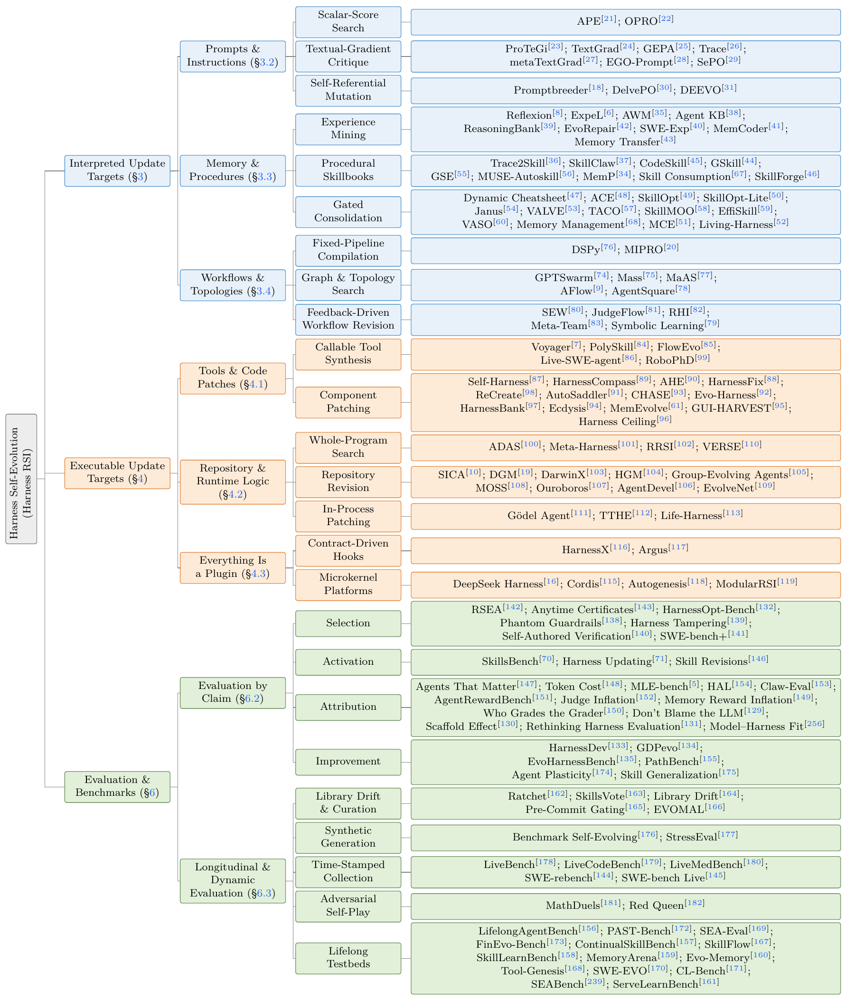

Evolutionary Search
Fitness supports selection; traces and critiques guide proposals. Evolutionary paradigms describe shared search structures across the reviewed methods.
Survey / Source snapshot / 1 November 2026
Theory, Algorithms, Evaluation, Applications, and Impact


Execution experience can become persistent instructions, memory, workflows, and tools. This survey connects how those artifacts evolve with their evaluation, theoretical limits, deployment, and societal effects.
Building agents that learn from experience is a central goal of artificial intelligence. Harness self-evolution offers a path toward this goal by adapting the system around a fixed base model. This article develops a unified framework for examining how execution feedback produces persistent harness changes. We organize algorithms by their update targets, distinguishing instructions, memory, and workflow specifications interpreted by fixed components from executable tools and runtime logic, and compare how they propose and admit changes. The theoretical analysis views harness evolution within the framework of evolutionary algorithms and draws on PAC learning theory for continual learning to provide insights into algorithm design. For evaluation, we distinguish four claims behind a reported gain: selection, whether the estimate is independent of the search or accounts for selection; activation, whether the accepted update operated in the scored runs; attribution, whether it caused the difference under controlled evaluation conditions; and improvement, whether the difference holds beyond the tasks that produced it. The reviewed protocols show why held-out performance, component use, and retained gains require different evidence. This article covers applications in personal assistance, enterprise automation, scientific discovery, robotics, and public services. We also discuss potential effects on productivity and skills, economic distribution and market structure, innovation and public services, privacy and security, and institutional governance. Drawing on these analyses, we identify future directions in updating algorithms, supporting infrastructure, evaluation, and responsible deployment.

Figure 2. Research growth and representative systems, grouped by primary emphasis.
Execution feedback revises the harness \(H\) around a fixed model \(M\). Accepted changes persist across runs, and later experience can trigger further updates.
Self-evolution names the update mechanism; self-improvement requires a beneficial change supported by an explicit comparison. Harness RSI remains the conventional short name, without a guarantee that every accepted revision helps.
Run the current harness.
Collect a batch of trajectories.
Use that feedback to revise the harness.
\(\tau\): trajectory · \(E\): environment · \(b\): batch size
The model and final evaluator stay fixed; internal critics may evolve. Rejected updates keep \(H_k\).
Two families of update targets: payloads interpreted by fixed host components, and executable implementations or compositions. Select a mechanism to browse its papers.

Figure 4. Harness update targets and the operational loop.

Two perspectives: how revisions are found, and what establishes generalization and retention.
Fitness supports selection; traces and critiques guide proposals. Evolutionary paradigms describe shared search structures across the reviewed methods.
An admission comparison can certify improvement when candidates are fixed before fresh validation tasks are drawn and error is controlled across comparisons. Repeated executions reduce run noise without adding independent tasks.
Which evidence a study needs depends on its conclusion: comparing a final state differs from crediting an individual update and its lasting effect.
The reported estimate is unselected, or its inference accounts for selection. Uncorrected scores must remain separate from adaptive choices.
Direct traces show the update operated in scored runs. Carried evidence traces downstream use in model context, runtime decisions or outputs, or adherence to interpreted guidance, with coverage recorded.
Controlled comparisons distinguish the update’s effect from execution variation, added inference compute, and evaluator change.
The difference holds away from the tasks that formed the update, with the baseline and round specified. The audit grades task distance only; it is not a numerical distance metric or proof of a reliable positive effect.
A held-out partition used for ranking, admission, or report choice is no longer independent of search. HarnessX checks replay, novelty, and structure without guaranteeing non-decreasing task scores; neither these checks nor Self-Harness's non-regression gate establishes retention outside the tested conditions.

Figure 5. Four claims and the controls needed across update rounds.
95 methods in scope; 93 primary comparisons are scored. 2 methods without empirical evaluation are excluded. Criteria describe reported evidence within its recorded coverage.
Activation credits an identified scored-run case; Improvement grades task distance only.
Coverage of the four criteria; not an overall method ranking.
Activation and attribution remain the main evidence gaps. A held-out gain at one round also leaves long-term retention unresolved.
Persistent harness state can carry personal preferences, shared enterprise procedures, research know-how, and robotic skills. The survey examines existing and prospective deployments, alongside effects on work, knowledge ownership, security, and governance.
Open questions span model–harness–environment co-evolution, compositional program contracts, reusable state, dynamic evaluation, and authorization boundaries. Practice-environment gains need separate deployment evidence; changing a capability can invalidate the conditions under which it was approved.

Figure 7. Deployment requirements across five settings.

Figure 8. Hypothesized pathways, without established causal estimates.
Search papers and mechanisms. Evidence markers follow Selection · Activation · Attribution · Improvement.
Cite the version you use: the full version or the arXiv paper.
Full version: Harness Self-Evolution: Theory, Algorithms, Evaluation, Applications, and Impact.
arXiv paper: Self-Evolving Agent Harness.
@misc{wei2026harnessrsi, title = {{Harness Self-Evolution: Theory, Algorithms, Evaluation, Applications, and Impact}}, author = {Wei, Chuyang and Guan, Haoxiang and Zhu, Minghang and Zhou, Kexin and He, Jiyan and Zhou, Xiren and Chen, Huanhuan and Shen, Yifei}, year = {2026}, url = {https://github.com/zgcagi/Harness-RSI/blob/main/paper/harness-self-evolution.pdf} } @misc{wei2026selfevolvingagentharness, title = {{Self-Evolving Agent Harness}}, author = {Wei, Chuyang and Guan, Haoxiang and Zhu, Minghang and Zhou, Kexin and He, Jiyan and Zhou, Xiren and Chen, Huanhuan and Shen, Yifei}, year = {2026}, eprint = {2610.18813}, archivePrefix = {arXiv}, primaryClass = {cs.AI}, url = {https://arxiv.org/pdf/2610.18813} }